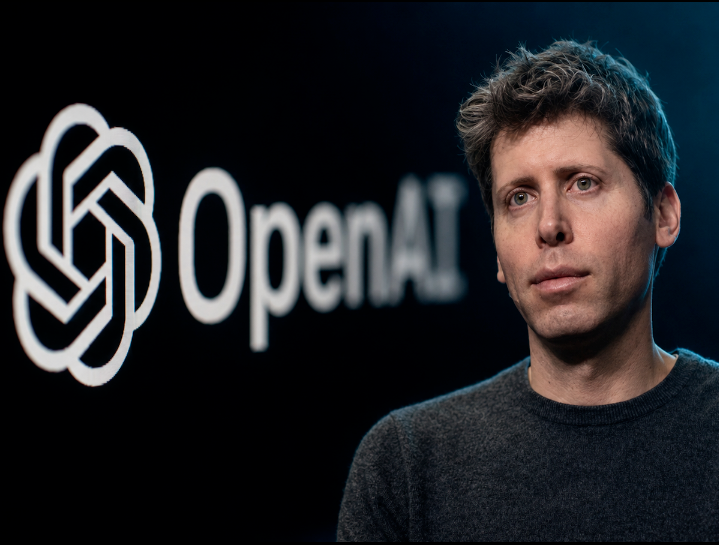
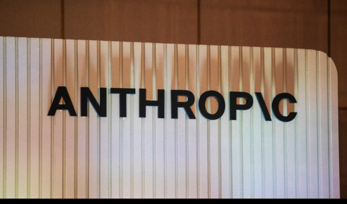

Tempat Literasi Berita AI yang Terbaru,Menarik,dan Terpercaya!!

"Kami perlu memastikan ada batasan yang jelas sebelum teknologi ini mencapai titik di mana ia bisa memprogram dirinya sendiri,"
tulis Anthropic dalam laporan tersebut. Mereka menegaskan bahwa jeda sementara sangat diperlukan agar para ilmuwan dan regulator memiliki waktu yang cukup untuk membangun sistem pengamanan yang berlapis